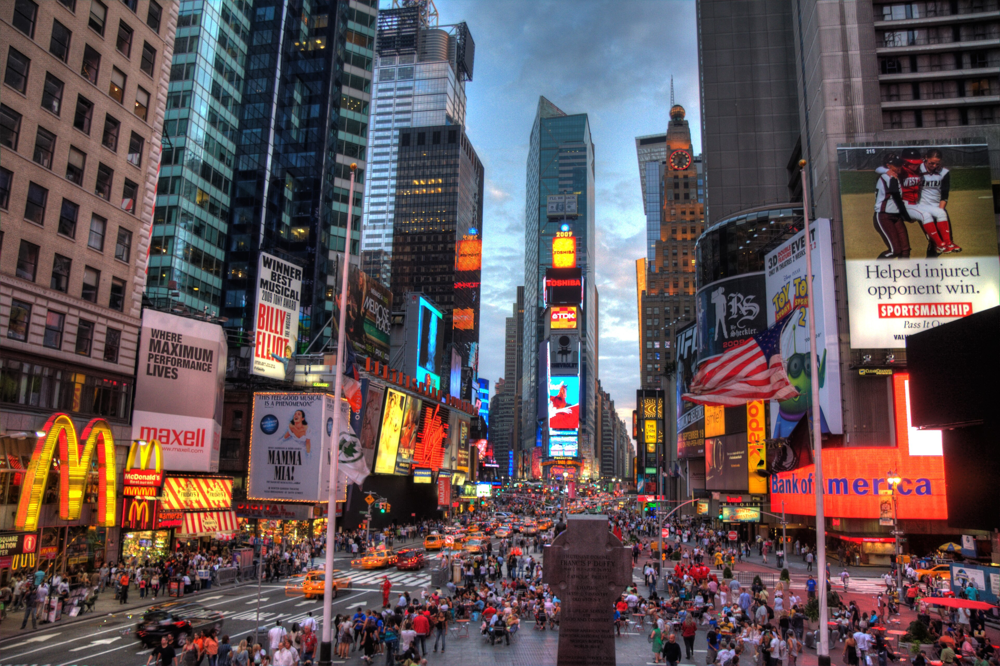

Essentials
Explore the five boroughs, iconic landmarks, and unique neighborhoods of the city that never sleeps.
Must-see attractions
- Times Square
- Statue of Liberty
- Empire State Building
- Metropolitan Museum of Art

Explore the five boroughs, iconic landmarks, and unique neighborhoods of the city that never sleeps.